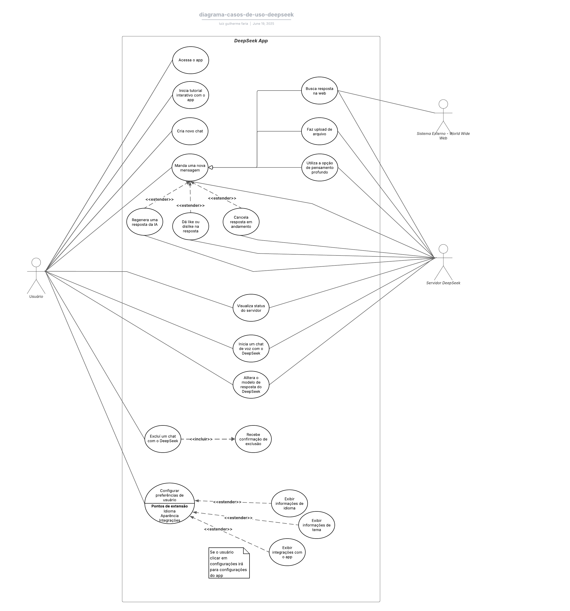

Casos de Uso
Introdução
Os diagramas de caso de uso são uma ferramenta fundamental da linguagem de modelagem unificada (UML) que permitem representar graficamente as funcionalidades esperadas de um sistema do ponto de vista de seus usuários. Essa técnica é amplamente utilizada na engenharia de requisitos para descrever as interações entre os atores (usuários ou sistemas externos) e os serviços oferecidos pela aplicação. No contexto do projeto DeepSeek, a modelagem dos casos de uso contribui para a compreensão do comportamento do sistema sob diferentes perspectivas de interação, facilitando a comunicação entre stakeholders técnicos e não técnicos, e servindo como base para futuras etapas de projeto, desenvolvimento e testes.
Diagrama de Casos de Uso
Um diagrama de casos é uso é utilizado para descrever um conjunto de ações (casos de uso), que um sistema, ou um determinado conjunto de sistemas deve desempenehar em conjunto com um ou vários usuários extermos ao sistema, assim, cada caso de uso deverá trazer algum resultado observável e de valor para os atores ou algum outro interessado no sistema [1].
Componentes de um Diagrama de Casos de Uso
Um diagrama de casos de uso é possui quatro componentes principais: atores, casos de uso, barreira do sistema e relacionamentos.
- Atores: Os atores são representados por bonecos palito, podem ser seres humanos ou sistemas e subsistemas, eles são externos ao sistema que está sendo estudado, por isso, devem ficar de fora da barreira do sistema [2];
- Casos de uso: Os casos de uso são representados por elipses, e devem estar representados dentro da barreira do sistema que está sendo descrito no diagrama, é recomendado o uso de verbos no infinitivo para descrever os casos de uso para poder indicar que eles são ações que podem ser feitas no sistema [3];
- Barreira do sistema: A barreira do sistema é representada por um retângulo de lados sólidos que engloba tudo aquilo que faz parte do sistema que está sendo representado no diagrama [4];
- Relacionamentos: Um diagrama de casos de uso também representa os relacionamentos que estão presentes entre os casos de uso, eles podem ser de extensão (para representar esse tipo de relacionamento deve-se ligar uma seta tracejada do caso extendido ao caso base com o texto "extend" na seta), de inclusão (para representar esse relacionamento deve-se ligar uma seta tracejada do caso base ao caso incluído com o texto "include" na seta) e de gereralização ou herança (a qual é representa com uma seta cuja a ponta é um triângulo) [5].
Validação com Usuário
A validação com o usuário foi feita de forma presencial, no dia 25 de junho.
Participantes da validação
| Participante | Papel |
|---|---|
| Luiz | Integrante do grupo, responsável por coordenar a validação com o usuário. |
| Luisa Mel | Estudante de engenharia aeroespacial de 20 anos de idade, responsável por validar os casos de uso desenvolvidos e o diagrama de casos de uso para o artefato. |
Diagrama de Casos de Uso do App DeepSeek:
Com base nos requisitos elicitados na entrega 2 do projeto, foi possível elaborar um conjunto de casos de uso, que compõem o diagrama UML de casos de uso, o qual possui o usuário como ator primário, o servidor DeepSeek e o Sistema externo de conteúdos da internet como atores secundários. O diagrama possui requisitos já implementados no app bem como requisitos que não foram implementados ainda.

Casos de uso
Além do diagrama, é possível contruir uma tabela para cada um dos casos de uso presente no diagrama de caso de uso do app, essas tabelas buscam explicar ainda mais esses requisitos, apresentando os atores, os diferentes fluxos, pré e pós-condições, ação e itens de rastreabilidade.
Para isso, é necessário explicar os componentes presentes em um caso de uso.
- Ator: É quem será responsável por utilizar aquela funcionalidade presente no sistema [2];
- Pré-condições: São condições que devem existir para que o caso de uso comece de fato [6];
- Ação: São as tarefas ou funções principais que são realizadas pelo ator [7];
- Fluxo principal: É a maneira padrão que aquele ator irá utilizar aquela funcionalidade, é também chamado de fluxo básico ou fluxo de sucesso. Cada caso de uso tem somente um fluxo principal [8];
- Fluxo alternativo: Representa as escolhas que o usuário poderá fazer na execução de uma funcionalidade que serão responsáveis por alterar o comportamento da funcionalidade [9];
- Fluxo de excessão: Representa excessões que podem ocorrer ao utilizar aquele sistema, essas excessões devem ser previstas e tratadas, contudo é difícil que um software trate todas as possibilidades de excessão [10];
- Pós-condições: São condições irão existir após a ação do caso de uso ser finalizada.
Com base nesses itens, é possível elaborar a tabela template para preenchimento dos casos de uso presentes no diagrama de casos de uso.
Tabela 01 - Tabela template para descrever um caso de uso.
| Item | Informações |
|---|---|
| Código | - |
| Descrição - | - |
| Ator | - |
| Pré-condições | - |
| Ação | - |
| Fluxo principal | - |
| Fluxo alternativo | - |
| Fluxo de exceção | - |
| Pós-condições | - |
| Data de Criação | - |
| Rastreabilidade | - |
| Cenário relacionado | - |
| Léxico relacionado | - |
Metodologia
A modelagem dos casos de uso do DeepSeek foi conduzida com base nos princípios da UML, utilizando diagramas e descrições textuais conforme recomendação da literatura especializada. Inicialmente, identificaram-se os atores relevantes do sistema, como usuários finais, administradores e sistemas externos. Em seguida, foram definidos os principais casos de uso que representam as funcionalidades que o sistema deverá oferecer a esses atores. Os diagramas foram elaborados por meio da ferramenta Lucidchart, e cada caso de uso foi descrito com os seguintes elementos: nome, objetivo, atores envolvidos, fluxo de eventos (principal e alternativos), pré-condições, pós-condições e exceções. Essa abordagem visual e textual permite alinhar expectativas entre os envolvidos no projeto e fornecer uma visão clara do escopo funcional da aplicação.
Tabela de Contribuições
Tabela 02 - Contribuições no documento de casos de uso.
| Contribuinte | Descrição | Links |
|---|---|---|
| Ana Joyce | Criação dos casos de uso #UC01 | #UC01 |
| Davi | Criação dos casos de uso #UC02, #UC03 | #UC02 · #UC03 |
| Fábio | Criação dos casos de uso #UC04, #UC05 | #UC04 · #UC05 |
| Gabriela | Criação dos casos de uso #UC06, #UC07, #UC08 | #UC06 · #UC07 · #UC08 |
| Luiz | Criação dos casos de uso #UC09, #UC10, #UC11 | #UC09 · #UC10 · #UC11 |
| Ana Clara | Criação dos casos de uso #UC12, #UC13 | #UC12 · #UC13 |
| Mateus | Criação dos casos de uso #UC14 | #UC14 |
Validação com Usuário
A validação com o usuário foi feita de forma presencial, no dia 25 de junho.
Participantes da validação
| Participante | Papel |
|---|---|
| Luiz | Integrante do grupo, responsável por coordenar a validação com o usuário. |
| Luisa Mel | Estudante de engenharia aeroespacial de 20 anos de idade, responsável por validar os cenários desenvolvidos para o artefato. |
Casos de Uso Modelados:
#UC01 - Exclusão automática de dados de upload
Autor: Ana Joyce
Tabela 03 - Caso de uso 01 - Exclusão automática de dados de upload
| Item | Informações |
|---|---|
| Código | #UC01 |
| Descrição | O sistema deve excluir automaticamente os dados enviados via upload após determinado período ou após o uso concluído, garantindo segurança e privacidade. |
| Ator | Sistema |
| Pré-condições | O usuário realizou um upload de arquivo (documento, imagem, PDF, etc.) para uso temporário no DeepSeek. |
| Ação | O sistema verifica uploads armazenados e realiza exclusão automática conforme a política de retenção definida. |
| Fluxo principal |
|
| Fluxo alternativo |
|
| Fluxo de exceção |
|
| Pós-condições | Arquivos temporários são removidos automaticamente; nenhum dado de upload permanece após o período estabelecido. |
| Data de Criação | 18/05/2025 |
| Rastreabilidade | #RN04 — Exclusão automática de dados de upload #RIN11 — Requisito relacionado à segurança de dados |
| Cenário relacionado | #CN01 |
| Léxico relacionado | #LX01 |
#UC02 - Permite que o usuário use o DeepSeek e o integre com plataformas Externas.
Autor: Davi Emanuel
Tabela 04 - Caso de uso 02 - Permite que o usuário use o DeepSeek e o integre com plataformas Externas.
| Item | Informações |
|---|---|
| Código | #UC02 |
| Descrição | O usuário pode conectar plataformas externas (GitHub, Google, LinkedIn, Discord) ao DeepSeek para ampliar fontes de informação. |
| Ator | Usuário |
| Pré-condições | Acesso à internet, conta em plataformas externas, autorização do usuário para integração. |
| Ação | O usuário integra uma ou mais plataformas externas ao DeepSeek. |
| Fluxo principal |
|
| Fluxo alternativo |
|
| Fluxo de exceção |
|
| Pós-condições | O DeepSeek pode acessar dados autorizados das plataformas externas para enriquecer as respostas ou contexto do usuário. |
| Data de Criação | 17/05/2025 |
| Rastreabilidade | #RF37 |
| Cenário relacionado | #CN02 |
| Léxico relacionado | #LX02 |
#UC03 - Permite que o usuário use o Deepseek com a funcionalidade de integração por Voz.
Autor: Davi Emanuel
Tabela 05 - Caso de uso 03 - Permite que o usuário use o Deepseek com a funcionalidade de integração por Voz.
| Item | Informações |
|---|---|
| Código | #UC03 |
| Descrição | O usuário é capaz de realizar perguntas ao DeepSeek por meio de comandos de voz. |
| Ator | Usuário |
| Pré-condições | Acesso à internet, microfone habilitado, permissão concedida ao app para uso de áudio. |
| Ação | O usuário interage com o DeepSeek por comando de voz para realizar perguntas ou pesquisas. |
| Fluxo principal |
|
| Fluxo alternativo |
|
| Fluxo de exceção |
|
| Pós-condições | O usuário recebe a resposta para sua pergunta em texto. |
| Data de Criação | 17/05/2025 |
| Rastreabilidade | #RF14 |
| Cenário relacionado | #CN03 |
| Léxico relacionado | #LX03 |
#UC04 - Permite que o usuário selecione diferentes versões/modelos de IA no DeepSeek
Autor: Fabio
Tabela 06 - Caso de uso 04 - Permite que o usuário selecione diferentes versões/modelos de IA no DeepSeek.
| Item | Informações |
|---|---|
| Código | #UC04 |
| Descrição | Permite que o usuário selecione diferentes versões de modelos de IA (ex: R1, R2, R3) no DeepSeek, personalizando o estilo e a profundidade das respostas. |
| Ator | Júlia |
| Pré-condições | Estar com o DeepSeek aberto e com conexão à internet. |
| Ação | Júlia decide escolher o modelo que melhor se adequa à sua necessidade de resposta antes de enviar uma pergunta à IA. |
| Fluxo principal |
|
| Fluxo alternativo |
|
| Fluxo de exceção |
|
| Pós-condições | Júlia recebe uma resposta ajustada ao modelo escolhido, com o estilo e profundidade desejados. |
| Data de Criação | 17/05/2025 |
| Rastreabilidade | #RF32 |
| Cenário relacionado | #CN04 |
| Léxico relacionado | #LX04 |
#UC05 - Permite que o usuário acesse as configurações para alterar o tema do sistema (claro/escuro), ajustando a aparência da interface conforme suas preferências.
Autor: Fabio
Tabela 07 - Caso de uso 05 - Permite que o usuário acesse as configurações para alterar o tema do sistema (claro/escuro), ajustando a aparência da interface conforme suas preferências.
| Item | Informações |
|---|---|
| Código | #UC05 |
| Descrição | Permite que o usuário acesse as configurações do DeepSeek para alterar o tema visual da interface, escolhendo entre tema claro ou escuro, de acordo com suas preferências. |
| Ator | Lucas |
| Pré-condições | Estar logado no DeepSeek com conexão ativa à internet. Interface carregada. |
| Ação | Lucas deseja mudar o tema do sistema para modo escuro, pois está em um ambiente com pouca luz. |
| Fluxo principal |
|
| Fluxo alternativo |
|
| Fluxo de exceção |
|
| Pós-condições | O sistema permanece com o tema selecionado até nova alteração. A preferência visual do usuário foi respeitada. |
| Data de Criação | 17/05/2025 |
| Rastreabilidade | #RF27 |
| Cenário relacionado | #CN05 |
| Léxico relacionado | #LX05 |
#UC06 - Permite que o usuário envie um PDF e receba o texto extraído e insights, preservando formatação e símbolos.
Autor: Gabriela
Tabela 08 - Caso de uso 06 - Permite que o usuário envie um PDF e receba o texto extraído e insights, preservando formatação e símbolos.
| Item | Informações |
|---|---|
| Código | #UC06 |
| Descrição | Permite que o usuário envie um PDF e receba o texto extraído e insights, preservando formatação e símbolos. |
| Ator | Usuário |
| Pré-condições | PDF acessível no dispositivo |
| Ação | Júlia faz upload de um PDF e obtém o texto e insights extraídos |
| Fluxo principal |
|
| Fluxo alternativo |
|
| Fluxo de exceção |
|
| Pós-condições | Texto completo disponível como conteúdo editável; inconsistências sinalizadas para revisão |
| Data de Criação | 10/05/2025 |
| Rastreabilidade | #RF03, #RN06, #RN08 |
| Cenário relacionado | #CN06 |
| Léxico relacionado | #LX06 |
#UC07 - Permite buscar, em menos de 3 s, a versão mais recente do Node.js em 10/05/2025 e copiar o resultado.
Autor: Gabriela
Tabela 09 - Caso de uso 07 - Permite buscar, em menos de 3 s, a versão mais recente do Node.js em 10/05/2025 e copiar o resultado.
| Item | Informações |
|---|---|
| Código | #UC07 |
| Descrição | Permite buscar, em menos de 3 s, a versão mais recente do Node.js em 10/05/2025 e copiar o resultado. |
| Ator | Usuário |
| Pré-condições | Internet ativa; aba Search habilitada no DeepSeek |
| Ação | Pedro busca a versão do Node.js e copia o trecho retornado |
| Fluxo principal |
|
| Fluxo alternativo |
|
| Fluxo de exceção |
|
| Pós-condições | Versão documentada no repositório; critério de agilidade validado |
| Data de Criação | 10/05/2025 |
| Rastreabilidade | #RF01, #RF13 |
| Cenário relacionado | #CN07 |
| Léxico relacionado | #LX07 |
#UC08 - Permite refinar uma resposta gerada usando Like/Dislike/Regenerate/Copy até atingir clareza e concisão.
Autor: Gabriela
Tabela 10 - Caso de uso 08 - Permite refinar uma resposta gerada usando Like/Dislike/Regenerate/Copy até atingir clareza e concisão.
| Item | Informações |
|---|---|
| Código | #UC08 |
| Descrição | Permite refinar uma resposta gerada usando Like/Dislike/Regenerate/Copy até atingir clareza e concisão. |
| Ator | Usuário |
| Pré-condições | Resposta inicial gerada; conexão ativa |
| Ação | Mariana itera feedback e copia a versão final do texto |
| Fluxo principal |
|
| Fluxo alternativo |
|
| Fluxo de exceção |
|
| Pós-condições | Parágrafo final satisfatório; avaliação registrada |
| Data de Criação | 10/05/2025 |
| Rastreabilidade | #RF11, #RF12, #RF13, #RF17 |
| Cenário relacionado | #CN08 |
| Léxico relacionado | #LX08 |
#UC09 - Permite que o usuário resolva problemas difíceis, como os de matemática, oferecendo o fluxo de pensamento da IA além da resposta. Utiliza o modelo R1 do DeepSeek
Autor: Luiz
Tabela 11 - Caso de uso 09 - Permite que o usuário resolva problemas difíceis, como os de matemática, oferecendo o fluxo de pensamento da IA além da resposta. Utiliza o modelo R1 do DeepSeek.
| Item | Informações |
|---|---|
| Código | #UC09 |
| Descrição | Permite que o usuário resolva problemas difíceis, como os de matemática, oferecendo o fluxo de pensamento da IA além da resposta. Utiliza o modelo R1 do DeepSeek |
| Ator | Gauss |
| Pré-condições | Internet ativa, aba Pensamento Profundo (R1) habilitada no DeepSeek |
| Ação | Gauss digita a equação que está com dúvidas e pede para a IA resolvê-la |
| Fluxo principal |
|
| Fluxo alternativo |
|
| Fluxo de exceção |
|
| Pós-condições | Texto completo disponível com equações além do fluxo de consciência da IA |
| Data de Criação | 11/05/2025 |
| Rastreabilidade | #RF02, #RN07 |
| Cenário relacionado | #CN09 |
| Léxico relacionado | #LX09 |
#UC10 - Permite que o usuário cancele uma mensagem em andamento da IA no chat
Autor: Luiz
Tabela 12 - Caso de uso 10 - Permite que o usuário cancele uma mensagem em andamento da IA no chat
| Item | Informações |
|---|---|
| Código | #UC10 |
| Descrição | Permite que o usuário cancele uma mensagem que está sendo gerada pela IA no chat |
| Ator | João |
| Pré-condições | Internet ativa, uma mensagem precisa obrigatoriamente estar sendo gerada pela IA no chat |
| Ação | João cancela uma mensagem que está sendo gerada pois ela está incorreta |
| Fluxo principal |
|
| Fluxo alternativo |
|
| Fluxo de exceção |
|
| Pós-condições | Texto gerado parcialmente com a mensagem "Mensagem cancelada pelo usuário" escrita embaixo |
| Data de Criação | 16/05/2025 |
| Rastreabilidade | #RF19 |
| Cenário relacionado | #CN10 |
| Léxico relacionado | #LX10 |
#UC11 - Permite que o usuário veja o status do servidor, indicando se ele está em manutenção ou disponível para uso do chat da IA
Autor: Luiz
Tabela 13 - Caso de uso 11 - Permite que o usuário veja o status do servidor, indicando se ele está em manutenção ou disponível para uso do chat da IA.
| Item | Informações |
|---|---|
| Código | #UC11 |
| Descrição | Permite que o usuário veja o status do servidor da IA, indicando se ele está em manutenção ou funcionando normalmente |
| Ator | Clarice |
| Pré-condições | Internet ativa, Estar na tela de conversa com o DeepSeek |
| Ação | Visualizar a mensagem no topo da tela indicando o status do servidor no momento |
| Fluxo principal |
|
| Fluxo alternativo |
|
| Fluxo de exceção |
|
| Pós-condições | O usuário visualiza a mensagem em tempo real do status do servidor |
| Data de Criação | 16/05/2025 |
| Rastreabilidade | #RF29 |
| Cenário relacionado | #C11 |
| Léxico relacionado | #LX11 |
#UC12 - Permite que o usuário entenda o funcionamento da plataforma a partir de um tutorial interativo
Autor: Ana Clara
Tabela 14 - Caso de uso 12 - Permite que o usuário entenda o funcionamento da plataforma a partir de um tutorial interativo.
| Item | Informações |
|---|---|
| Código | #UC12 |
| Descrição | O usuário é capaz de entender o funcionamento da plataforma por meio de um tutorial interativo. |
| Ator | Usuário |
| Pré-condições | Conexão ativa. |
| Ação | O usuário acessa e segue o tutorial até concluir os passos propostos. |
| Fluxo principal |
|
| Fluxo alternativo |
|
| Fluxo de exceção |
|
| Pós-condições | O usuário entende as funcionalidades principais da plataforma; tutorial marcado como concluído. |
| Data de Criação | 15/05/2025 |
| Rastreabilidade | #RF28 |
| Cenário relacionado | #CN12 |
| Léxico relacionado | #LX12 |
#UC13 - Permite que o usuário apague o histórico de conversas, a partir de uma confirmação
Autor: Ana Clara
Tabela 15 - Caso de uso 13 - Permite que o usuário apague o histórico de conversas, a partir de uma confirmação.
| Item | Informações |
|---|---|
| Código | #UC13 |
| Descrição | O usuário pode apagar o histórico de conversas, a partir de uma confirmação explícita. |
| Ator | Usuário |
| Pré-condições | O usuário está logado na plataforma; histórico existente; conexão ativa. |
| Ação | O usuário acessa a opção de histórico e opta por apagar todas as conversas após confirmação. |
| Fluxo principal |
|
| Fluxo alternativo |
|
| Fluxo de exceção |
|
| Pós-condições | Histórico apagado. |
| Data de Criação | 15/05/2025 |
| Rastreabilidade | #RF22 |
| Cenário relacionado | #CN13 |
| Léxico relacionado | #LX13 |
#UC14 - Resumir vídeos do YouTube a partir de links inseridos no chat do DeepSeek.
Autor: Mateus
Tabela 16 - Caso de uso 14 - Resumir vídeos do YouTube a partir de links inseridos no chat do DeepSeek.
| Item | Informações |
|---|---|
| Código | #UC14 |
| Descrição | Permite que o usuário insira um link de vídeo do YouTube no chat do DeepSeek e obtenha um resumo automático gerado pelo sistema. |
| Ator | Usuário do DeepSeek |
| Pré-condições |
|
| Ação | O usuário solicita um resumo de um vídeo enviado por meio de um link do YouTube. |
| Fluxo Principal |
|
| Fluxo Alternativo |
|
| Fluxo de Exceção |
|
| Pós-condições | O usuário recebe um resumo automático do vídeo diretamente no chat, caso todas as condições sejam atendidas. |
| Data de Criação | 18/05/2025 |
| Rastreabilidade | #RF38 |
| Cenário relacionado | #CN14 |
| Léxico relacionado | #LX14 |
Referência Bibliográfica
1. SERRANO M., SERRANO M. Requisitos - Aula 13 - p. 12 - Disponível em: https://aprender3.unb.br/pluginfile.php/3096118/mod_resource/content/1/Requisitos%20-%20Aula%20013a.pdf. Acesso em 19 de Junho de 2025.
Foto da referência2. SERRANO M., SERRANO M. Requisitos - Aula 13 - p. 13 - Disponível em: https://aprender3.unb.br/pluginfile.php/3096118/mod_resource/content/1/Requisitos%20-%20Aula%20013a.pdf. Acesso em 19 de Junho de 2025.
Foto da referência3. SERRANO M., SERRANO M. Requisitos - Aula 13 - p. 13 - Disponível em: https://aprender3.unb.br/pluginfile.php/3096118/mod_resource/content/1/Requisitos%20-%20Aula%20013a.pdf. Acesso em 19 de Junho de 2025.
Foto da referência4. SERRANO M., SERRANO M. Requisitos - Aula 13 - p. 13 - Disponível em: https://aprender3.unb.br/pluginfile.php/3096118/mod_resource/content/1/Requisitos%20-%20Aula%20013a.pdf. Acesso em 19 de Junho de 2025.
Foto da referência5. SERRANO M., SERRANO M. Requisitos - Aula 13 - p. 14 - Disponível em: https://aprender3.unb.br/pluginfile.php/3096118/mod_resource/content/1/Requisitos%20-%20Aula%20013a.pdf. Acesso em 19 de Junho de 2025.
Foto da referência6. PRESSMAN, Roger S.; MAXIM, Bruce R.. Engenharia de software: uma abordagem profissional. 8 Porto Alegre: AMGH, 2016, p. 150.
Foto da referência7. PRESSMAN, Roger S.; MAXIM, Bruce R.. Engenharia de software: uma abordagem profissional. 8 Porto Alegre: AMGH, 2016, p. 150.
Foto da referência8. SERRANO M., SERRANO M. Requisitos - Aula 13 - p. 19 - Disponível em: https://aprender3.unb.br/pluginfile.php/3096118/mod_resource/content/1/Requisitos%20-%20Aula%20013a.pdf. Acesso em 19 de Junho de 2025.
Foto da referência9. SERRANO M., SERRANO M. Requisitos - Aula 13 - p. 21 - Disponível em: https://aprender3.unb.br/pluginfile.php/3096118/mod_resource/content/1/Requisitos%20-%20Aula%20013a.pdf. Acesso em 19 de Junho de 2025.
Foto da referência10. SERRANO M., SERRANO M. Requisitos - Aula 13 - p. 24 - Disponível em: https://aprender3.unb.br/pluginfile.php/3096118/mod_resource/content/1/Requisitos%20-%20Aula%20013a.pdf. Acesso em 19 de Junho de 2025.
Foto da referência11.LUCIDCHART. Diagrama de caso de uso UML. Lucidchart. Disponível em: https://www.lucidchart.com/pages/pt/diagrama-de-caso-de-uso-uml. Acesso em: 9 maio 2025.
12.DEEPSEEK AI. DeepSeek V3. Disponível em: https://github.com/deepseek-ai/DeepSeek-V .
{kind=link}
{kind=link}
{kind=link}
{kind=link}
{kind=link}
{kind=link}
{kind=link}
{kind=link}
{kind=link}
{kind=link}
Histórico de versões
| Data | Versão | Descrição | Autor | Revisor |
|---|---|---|---|---|
| 09/05/2025 | 1.0 | (#UCO1) Adição de introdução e metodologia. | @Ana Joyce | @Gabriela |
| 10/05/2025 | 1.0 | (#UCO2) Adição de conteúdo desenvolvido. | @Gabriela | @Ana Joyce |
| 11/05/2025 | 1.1 | (#UCO2) Adição de conteúdo desenvolvido. | @luiz | @Ana Joyce |
| 16/05/2025 | 1.2 | (#UCO2) Adição de conteúdo desenvolvido. | @luiz | @Davi Emanuel |
| 16/05/2025 | 1.3 | (#UCO2) Adição de conteúdo desenvolvido. | @Davi Emanuel | @luiz |
| 17/05/2025 | 1.4 | (#UCO2) Adição de conteúdo desenvolvido. | @Fabio | @Luiz |
| 18/05/2025 | 1.5 | (#UCO3) Adição de caso de uso Exclusão automática de dados de upload | @Ana Joyce | @revisor |
| 18/05/2025 | 1.6 | (#UCO2) Adição de conteúdo desenvolvido. | @Ana Borges | @ |
| 18/05/2025 | 1.7 | (#UC01-02-03) Adição de conteúdo desenvolvido e correção na estrutura de indexação dos casos de uso. | @Mateus | @Luiz |
| 18/05/2025 | 1.8 | (#UC02) Adição do diagrama de casos de uso | @Luiz | @Gabriela |
| 05/06/2025 | 2.0 | (#UC02) Adição dos ids para os casos de uso criados | @Luiz | @Fabio |
| 06/06/2025 | 2.1 | (#UC02) Adição da tabela de contribuições e dos hiberlinks para os casos de uso desenvolvidos. | @Luiz | @Fabio |
| 19/06/2025 | 2.2 | (#UC02) Melhorias nas tabelas de casos de uso e adição da imagem do diagrama de caso de uso. | @Luiz | @Ana Clara |
| 19/06/2025 | 2.3 | (#UC02) Adição das referências para o documento. | @Luiz | @Ana Clara |
| 26/06/2025 | 2.4 | (#UC02) Adição da validação dos casos de uso e do diagrama de casos de uso. | @Luiz | @ |
| 27/06/2025 | 2.5 | (#UC02) Adiciona o termo de consetimento da gravação da validação dos casos de uso e diagrama. | @Luiz | @Ana Clara |